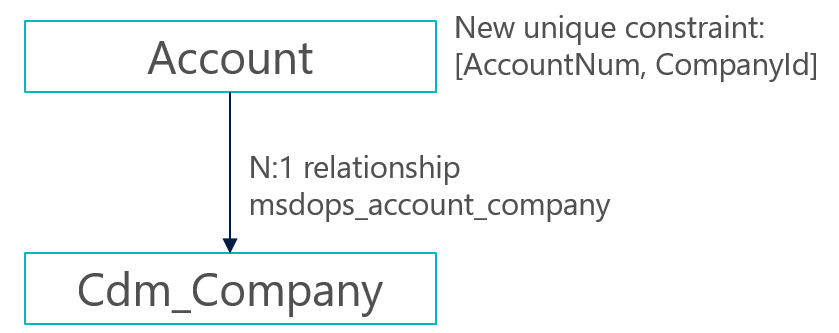

Company concept in Dataverse
[!include[rename-banner](~/includes/cc-data-platform-banner.md)]In Finance and Operations, the concept of a company is both a legal construct and a business construct. It's also a security and visibility boundary for data. Users always work in the context of a single company, and most of the data is striped by company.
Dataverse doesn't have an equivalent concept. The closest concept is business unit, which is primarily a security and visibility boundary for user data. This concept doesn't have the same legal or business implications as the company concept.
Because business unit and company aren't equivalent concepts, it isn't possible to force a one-to-one (1:1) mapping between them for the purpose of Dataverse integration. However, because users must, by default, be able to see the same rows in the application and Dataverse, Microsoft has introduced a new table in Dataverse that is named cdm_Company. This table is equivalent to the Company table in the application. To help guarantee that visibility of rows is equivalent between the application and Dataverse out of the box, we recommend the following setup for data in Dataverse:
- For each Finance and Operations Company row that is enabled for dual-write, an associated cdm_Company row is created.
- When a cdm_Company row is created and enabled for dual-write, a default business unit is created that has the same name. Although a default team is automatically created for that business unit, the business unit isn't used.
- A separate owner team is created that has the same name. It's also associated with the business unit.
- By default, the owner of any row that is created and dual-written to Dataverse is set to the "DW Owner" team that is linked to the associated business unit.
The following illustration shows an example of this data setup in Dataverse.
Because of this configuration, any row that is related to the USMF company will be owned by a team that is linked to the USMF business unit in Dataverse. Therefore, any user who has access to that business unit through a security role that is set to business unit–level visibility can now see those rows. The following example shows how teams can be used to provide the correct access to those rows.
- The "Sales Manager" role is assigned to members of the "USMF Sales" team.
- Users who have the "Sales Manager" role can access any account rows that are members of the same business unit that they are members of.
- The "USMF Sales" team is linked to the USMF business unit that was mentioned earlier.
- Therefore, members of the "USMF Sales" team can see any account that is owned by the "USMF DW" user, which would have come from the USMF Company table in Finance and Operations.
As the preceding illustration shows, this 1:1 mapping between business unit, company, and team is just a starting point. In this example, a new "Europe" business unit is manually created in Dataverse as the parent for both DEMF and ESMF. This new root business unit is unrelated to dual-write. However, it can be used to give members of the "EUR Sales" team access to account data in both DEMF and ESMF by setting the data visibility to Parent/Child BU in the associated security role.
A final topic to discuss is how dual-write determines which owner team it should assign rows to. This behavior is controlled by the Default owning team column on the cdm_Company row. When a cdm_Company row is enabled for dual-write, a plug-in automatically creates the associated business unit and owner team (if it doesn't already exist), and sets the Default owning team column. The admin can change this column to a different value. However, the admin can't clear the column as long as the table is enabled for dual-write.

Company striping and bootstrapping
Dataverse integration brings company parity by using a company identifier to stripe data. As the following illustration shows, all company-specific tables are extended so that they have a many-to-one (N:1) relationship with the cdm_Company table.

- For rows, after a company is added and saved, the value becomes read-only. Therefore, users should make sure that they select the correct company.
- Only rows that have company data are eligible for dual-write between the application and Dataverse.
- For existing Dataverse data, an admin-led bootstrapping experience will soon be available.
Autopopulate company name in customer engagement apps
There are several ways to auto-populate the company name in customer engagement apps.
If you are a system administrator, you can set the default company by navigating to Advanced Settings > System > Security > Users. Open the User form, and in the Organization Information section, set the Company to default on Forms value.

If you have Write access to the SystemUser table for the Business Unit level, then you can change the default company on any form by selecting a company from the Company drop-down menu.

If you have Write access to data in more than one company, then you can change the default company by choosing a row that belongs to different company.

If you are a system configurator or administrator, and you want to auto-populate company data on a custom form, then you can use form events. Add a JavaScript reference to msdyn_/DefaultCompany.js and use the following events. You can use any out-of-the-box form, for example, the Account form.
- OnLoad event for the form: Set the defaultCompany column.
- OnChange event for the Company column: Set the updateDefaultCompany column.
Apply filtering based on the company context
To apply filtering based on the company context on your custom forms or on custom lookup columns added to the standard forms, open the form and use the Related Records Filtering section to apply the company filter. You must set this for each lookup column that requires filtering based on the underlying company on a given row. The setting is shown for Account in the following illustration.